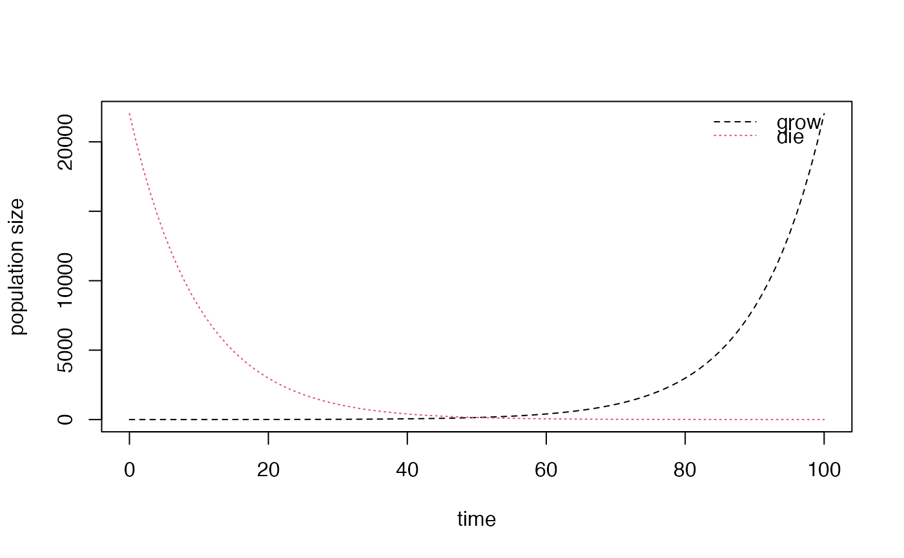

plot_simple.RdA simple plot all of the populations in a data frame against time. One column must be called "time" and will be used as the x-axis of the plot. The rest will be used as different lines on the y-axis, with a legend denoting their column names. See plot_populations() above for a more sophisticated plotting function.
plot_simple(populations, new.graph = TRUE, xlim = NA, ylim = NA, lty = 1)
| populations | Data frame with columns corresponding to different population segments and a 'time' column |
|---|---|
| new.graph | (optionally) whether to start a new graph, default TRUE |
| xlim | (optionally, for new graphs) the limits of the x axis, default min to max time |
| ylim | (optionally, for new graphs) the limits of the y axis, default min to max pop size |
| lty | (optionally) the line type for all lines on the graph, default 1 |
df <- data.frame(time=0:100, grow=exp((0:100) / 10), die=exp(seq(10, 0, by = -0.1))) plot_simple(df, lty = c(2, 3))